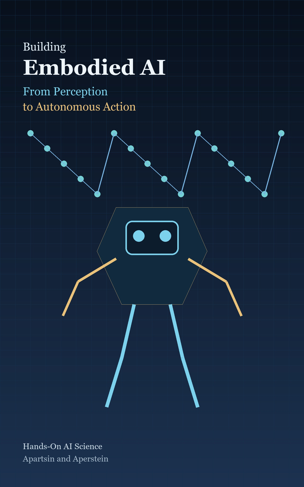

A practitioner's guide to embodied agents, robot learning, simulation, world models, and physical intelligence.
Embodied intelligence begins when an agent must act, observe the consequences, and adapt inside a changing world. This book is one connected journey through robotics, control, simulation, reinforcement learning, imitation learning, vision-language-action models, world models, humanoids, safety, and deployment.
Each part adds one layer to the agent that senses, predicts, decides, acts, and learns.
The conceptual vocabulary of agents, environments, embodiment, and closed-loop intelligence.
3 chapters · 24 sections IIThe geometry, kinematics, dynamics, control, and sensing that make physical agents intelligible.
5 chapters · 36 sections IIIThe simulators, environments, benchmarks, and synthetic-data practices used to build embodied systems today.
5 chapters · 32 sections IVInteraction-driven learning, from policy gradients and off-policy methods to safe exploration and sim-to-real transfer.
7 chapters · 37 sections VA coherent segment of the embodied ai stack.
6 chapters · 33 sections VIVision, 3d understanding, localization, mapping, and navigation as perception for action.
4 chapters · 27 sections VIILanguage-guided agents, vlms, llm planners, vlas, and cross-embodiment foundation models.
5 chapters · 35 sections VIIIPrediction, latent dynamics, model-based control, generative worlds, and diffusion planning.
6 chapters · 32 sections IXHands, legs, humanoids, drones, vehicles, and the skills that let agents move through the world.
7 chapters · 39 sections XTeams of agents, humans in the loop, open worlds, and lifelong interaction.
3 chapters · 16 sections XIMetrics, uncertainty, safety filters, deployment architecture, and operational discipline.
4 chapters · 21 sections XIIMemory, continual learning, open problems, capstone projects, and teaching paths.
5 chapters · 31 sectionsFive habits, kept in every chapter from the first simulator to the final deployment.
Every chapter connects concepts to a runnable artifact, from a tiny environment to a robot-learning pipeline.
After each from-scratch build, a shortcut names the maintained tool that makes the practical version small.
Failure modes, research frontiers, recipes, and cross-references are typeset as distinct boxes for fast scanning.
Chapters close with build tasks that turn theory into testable systems.
Geometry, control, estimation, and simulation reappear inside modern learned policies and world models.
Building Embodied AI is the fifth connected book in a deep, build-it-yourself AI series.
Hands-On AI Science is a series of in-depth guides to the major fields of artificial intelligence. Every book goes deep into the theory, models, and internals, covers the classical foundations and the most recent ideas, then shows how to build each one in Python with modern libraries and tools.
From Perception to Autonomous Action.
You are hereRead the full About the Hands-On AI Science Series note.